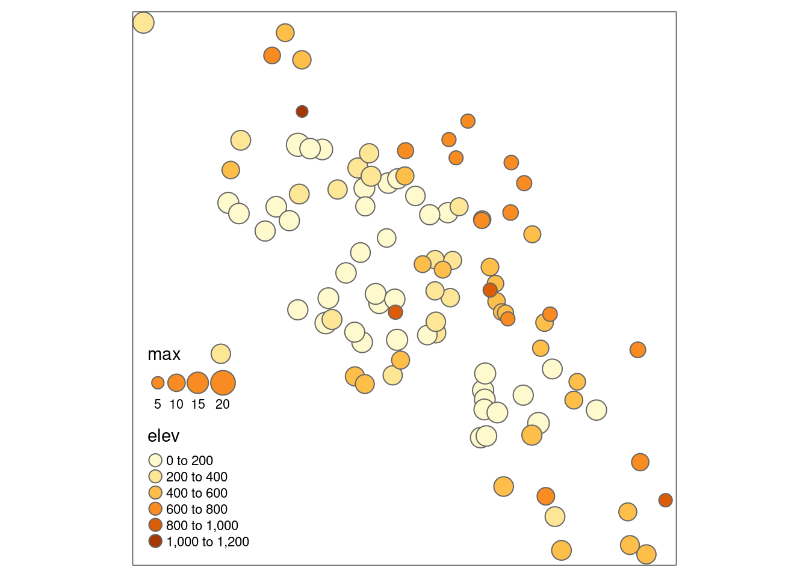

3 Geospatial Data Visualization
See :: https://r-spatial.github.io/sf/articles/sf5.html
3.3 Advanced tmaps library
#> Loading required package: sf
#> Linking to GEOS 3.10.2, GDAL 3.4.1, PROJ 8.2.1; sf_use_s2()
#> is TRUE
#> Loading required package: readrCreate Air temperature measurements simple feature:
t_day <- read_csv("AirTemperature_day.csv")
#> Rows: 101 Columns: 8
#> ── Column specification ────────────────────────────────────
#> Delimiter: ","
#> chr (1): Name
#> dbl (7): lon, lat, elev, mean, min, max, N
#>
#> ℹ Use `spec()` to retrieve the full column specification for this data.
#> ℹ Specify the column types or set `show_col_types = FALSE` to quiet this message.
t_day_sf <- st_as_sf(t_day,coords = c("lon","lat"), crs=4326)Which variables are available?
names(t_day_sf)
#> [1] "Name" "elev" "mean" "min" "max"
#> [6] "N" "geometry"Let’s create a map using the tmap library:
require(tmap)
#> Loading required package: tmap
#> Breaking News: tmap 3.x is retiring. Please test v4, e.g. with
#> remotes::install_github('r-tmap/tmap')
tmap::tmap_mode("plot")
#> tmap mode set to plotting
tm_shape(t_day_sf) +
tm_bubbles(size="max",col="elev")
Note that you can create interactive maps using the "view" mode (in this document interactive maps don’t work).
In the book GEOG3915 GeoComputation and Spatial Analysis practicals it is created without problems.